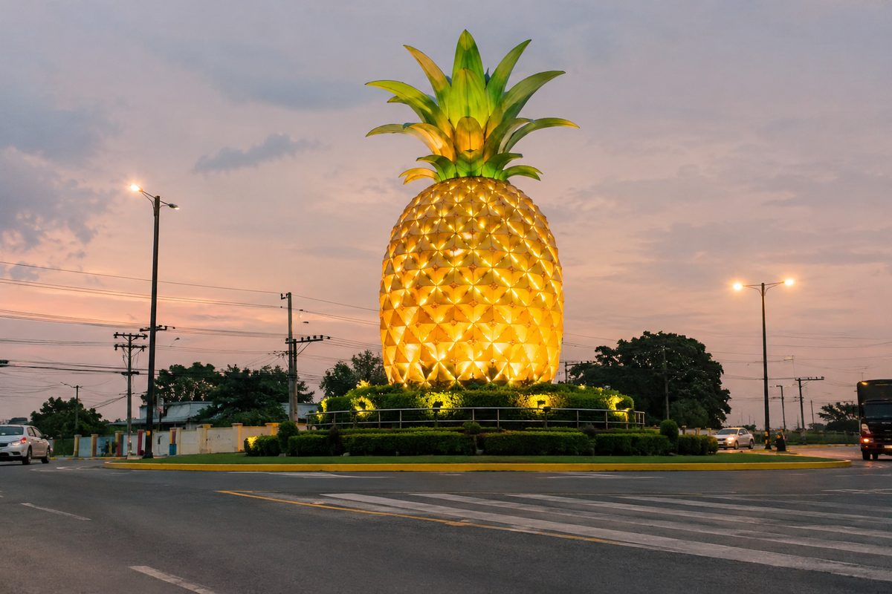
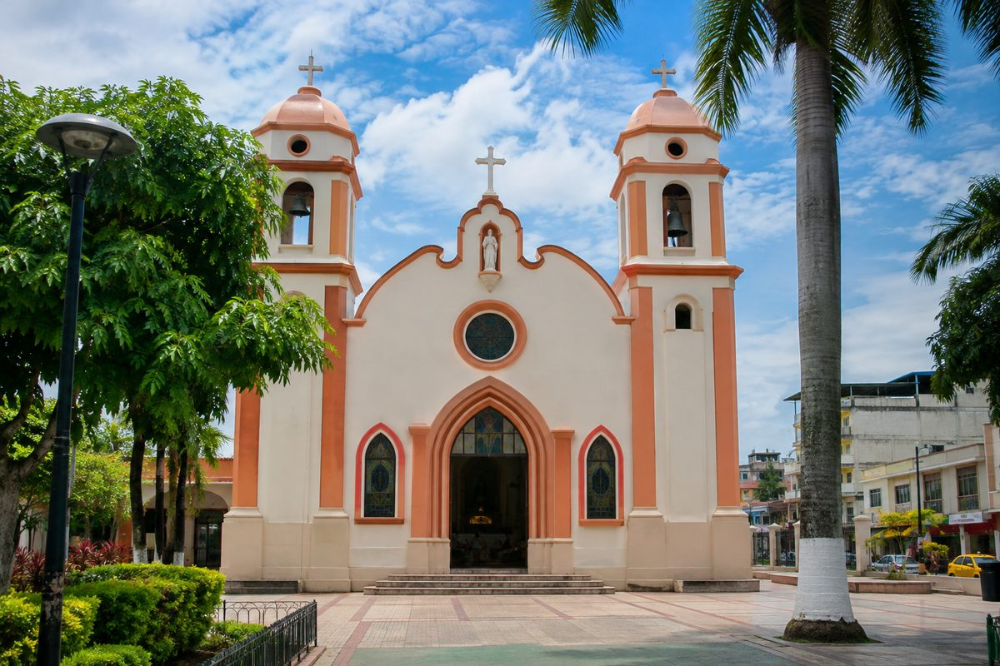
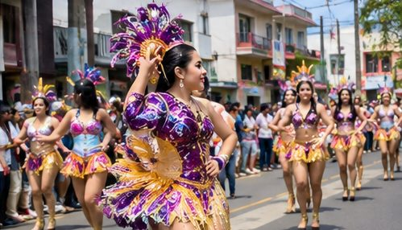

Bienvenido a Milagro, la tierra más dulce
Piña, caña de azúcar, viveros que florecen junto a la carretera y una historia que comenzó con un milagro. Recorre con nosotros la ciudad que endulza al Ecuador.
Una ciudad con sabor a piña y caña
San Francisco de Milagro es la cabecera del cantón del mismo nombre, en el centro-sur de la provincia del Guayas, dentro de la cuenca baja del río Guayas. Es una de las ciudades más grandes de la provincia y su vida está profundamente unida a la agricultura.
“La tierra más dulce del Ecuador”
Así la llaman por su tradición en el cultivo de piña y caña de azúcar. Hoy la piña sigue siendo su emblema: aparece en monumentos, en su identidad cultural y en el orgullo de cada milagreño.

¿Qué quieres descubrir hoy?
Cada sección te lleva a una parte distinta de Milagro. Toca una tarjeta para entrar.
Historia
De la cultura Los Chirijos al cantón de 1913.
Entrar →Atractivos
Monumentos, parques, viveros y fincas.
Entrar →Gastronomía
Sabores costeños y dulces de piña.
Entrar →Fiestas
Calendario cultural y fiestas septembrinas.
Entrar →Planifica
Arma tu itinerario y juega la trivia.
Entrar →Contacto
Sobre la autora y formulario.
Entrar →Un nombre nacido de un milagro
Siglos de historia: pueblos ancestrales, una leyenda colonial, el ferrocarril y la cantonización.
¿Por qué se llama Milagro?
Según la tradición, a finales del siglo XVIII doña María, esposa del hacendado español Miguel de Salcedo, enfermó gravemente de fiebre. Don Miguel rezó una novena a San Francisco pidiendo un milagro, mientras ella seguía un tratamiento con hierbas que le dio un indígena de la zona.
Al poco tiempo doña María se recuperó. Agradecido, Salcedo atribuyó la curación a San Francisco, y desde entonces el lugar lleva el nombre de San Francisco de Milagro.

El cronista local Víctor Hugo Vicuña ha señalado que esta historia es tradición oral y no está documentada; existen otras versiones sobre el origen del nombre.
Momentos clave
Toca cada fecha para ver más.
Pueblos ancestrales
Ver más +En la zona se asentó la cultura conocida localmente como Los Chirijos. Coleccionistas milagreños conservan cientos de piezas arqueológicas de esa época.
La leyenda del milagro
Ver más +Según la tradición, el 15 de diciembre de 1786 Miguel de Salcedo nombra su hacienda “San Francisco del Milagro”. Hoy esa fecha se recuerda como el Día del Milagreñismo.
Recinto El Milagro
Ver más +El 8 de noviembre de 1820 se crea el recinto El Milagro, primer reconocimiento como poblado.
Parroquia de Guayaquil
Ver más +El 17 de octubre de 1842 Milagro se convierte en parroquia del cantón Guayaquil. En 1883 pasa a formar parte del nuevo cantón Yaguachi.
Llega el tren
Ver más +El ferrocarril trajo comercio y visitantes nacionales y extranjeros; con él empezó el turismo en Milagro.
Cantonización
Ver más +El 17 de septiembre de 1913 el presidente Leonidas Plaza Gutiérrez firma el decreto que eleva a Milagro a la categoría de cantón.
Símbolos milagreños
La piña
Emblema de la ciudad, presente en monumentos, poemas y canciones.
La caña
Motor económico; Milagro es sede del Ingenio Valdez, uno de los grandes del país.
El verde
En su bandera, el verde representa la riqueza agrícola del cantón.
Lugares que tienes que visitar
Filtra por tipo, abre cada lugar para ver detalles y guarda tus favoritos con el corazón.
Sabores de la costa milagreña
La cocina de Milagro mezcla tradición montuvia, frutas tropicales y el dulzor de la caña. Toca cada plato para darle la vuelta.
Ruta dulce: la piña en todas sus formas
En Milagro la piña se disfruta fresca, en jugo, en dulce de piña o como relleno de postres. Aunque hoy gran parte de la fruta llega de cantones vecinos, sigue siendo el sabor que define a la ciudad.
Un calendario lleno de tradición
Desfiles, retretas, cabalgatas montuvias y la bendición de frutas: conoce las fechas más importantes.
Cantonización de Milagro
La fiesta mayor. Durante septiembre hay pregones, retretas, misa campal y bendición de frutas en la iglesia central, y festivales en el Parque Central.
Parroquialización
Recuerda la creación de la parroquia Milagro en 1842, cuando pertenecía al cantón Guayaquil.
Creación del recinto
Conmemora el 8 de noviembre de 1820, cuando nace el recinto El Milagro.
Día del Milagreñismo
Honra la leyenda de 1786 que dio nombre a la ciudad y el orgullo de ser milagreño.
Cabalgata montuvia
Milagro ha sido sede de la Gran Cabalgata de Integración Montuvia, con platos típicos y artesanías.
Teatro y cultura
Grupos culturales locales llevan a escena la historia ancestral y la leyenda de Milagro.

Faltan para las fiestas de cantonización
Arma tu ruta por Milagro
Elige los lugares que te interesan y cuántos días tienes: te armamos un itinerario al instante. Al final, pon a prueba lo que aprendiste.
¿Cuánto sabes de Milagro?
5 preguntas rápidas. ¡Demuestra que eres un experto milagreño!
Antes de viajar
¿Cómo llego a Milagro desde Guayaquil?
Milagro está aproximadamente a 46 km de Guayaquil. Se llega por carretera en bus interprovincial o vehículo propio, cruzando Durán. El viaje suele tomar alrededor de una hora, según el tráfico.
¿Qué clima tiene?
Es una ciudad cálida de la costa, con temporada lluviosa entre enero y abril aproximadamente. Lleva ropa fresca, protector solar, gorra y agua.
¿Cuál es la mejor época para visitar?
Septiembre es ideal para vivir las fiestas de cantonización. Los viveros se disfrutan todo el año, especialmente en las mañanas.
¿Qué souvenir me llevo?
Una planta ornamental de los viveros, dulces de piña o una piña fresca. ¡Lo más milagreño posible!
Hablemos
Este sitio fue creado como proyecto académico. Escríbeme tus dudas, sugerencias o lugares que debería agregar.
Jennifer Janeth Jarrin Luna
Estudiante de Multimedia y Producción Audiovisual
¡Gracias, !
Tu mensaje quedó registrado. Para una respuesta, escríbeme a jjarrinl@unemi.edu.ec.